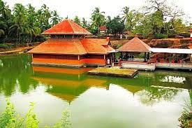

Bekel Fort
Bekal Fort is a medieval fort built by Shivappa Nayaka of Keladi in 1650 AD, at Bekal. It is the largest fort in Kerala, spreading over 40 acres.

Anathapura Lake Temple
Ananthapadmanabhaswamy Temple or Ananthapura Lake Temple is a Hindu temple built in the middle of a lake in the little village of Ananthapura, around 6 km from the town of Kumbla in Manjeshwaram Taluk of Kasaragod District of Kerala, South India.

Ranipuram
Ranipuram is a village and a major tourist attraction in the Kasaragod district of the Indian state of Kerala. It is located near Talakaveri Wildlife Sanctuary in Kerala-Karnataka border.